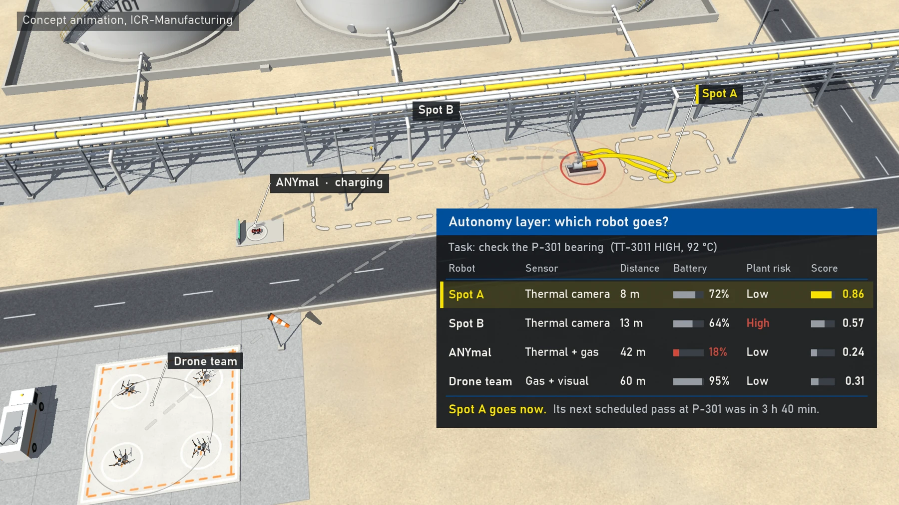
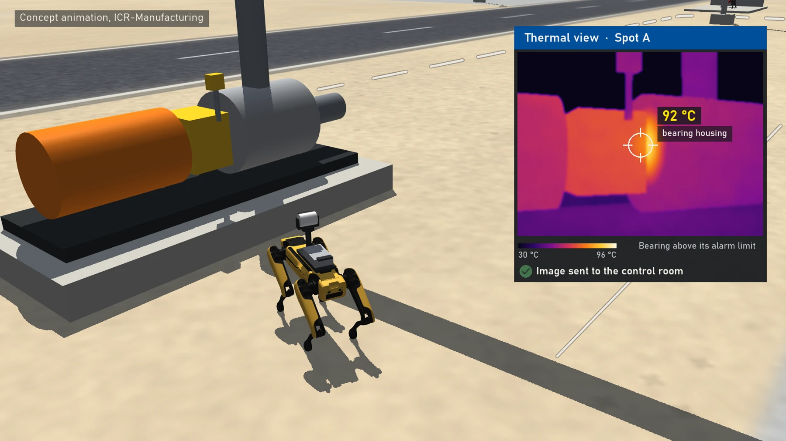

Industrial autonomy · Plant-driven inspection
Autonomous Multi-Robot Inspection for Industrial Plants
Presented by Abderraouf Maoudj · IRC-IMR, KFUPM
An autonomy and intelligence layer turns plant conditions into coordinated inspection missions. Instead of relying only on fixed patrols, the proposed system selects the robot, route and inspection action according to sensing capability, distance, battery state and plant risk.
The video illustrates the proposed mission sequence through a concept animation. The research contribution is the robot autonomy and intelligence layer between plant management and heterogeneous robot fleets.
Research focus
- Assign tasks and routes dynamically: Select appropriate robots using capability, location, battery, plant risk and incoming alarms, then coordinate their routes through the shared environment.
- Respond to plant anomalies: Trigger inspection missions when abnormal temperature, pressure, gas or other operating conditions are detected, supporting event-driven monitoring for industrial plants.
- Coordinate complementary robot teams: Combine legged robots, aerial vehicles and crawlers for inspection and cooperative gas-source localization, with safe coordination across different robot capabilities.
- Integrate the decision layer: The proposed architecture interfaces with plant-control and robot-management systems, including Yokogawa systems illustrated in the project architecture. Its focus is deciding which robot goes where, when and with which safety constraints.
Project overview

